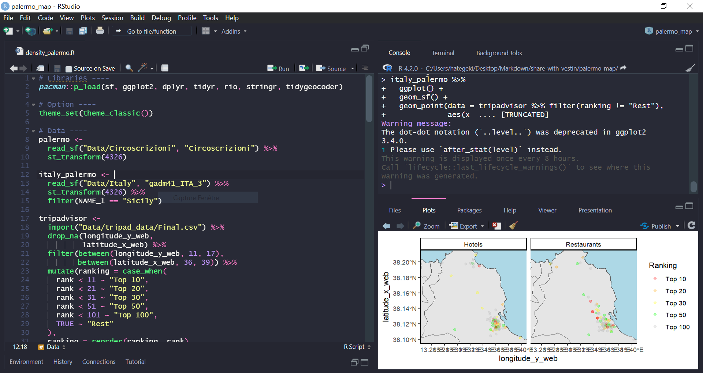
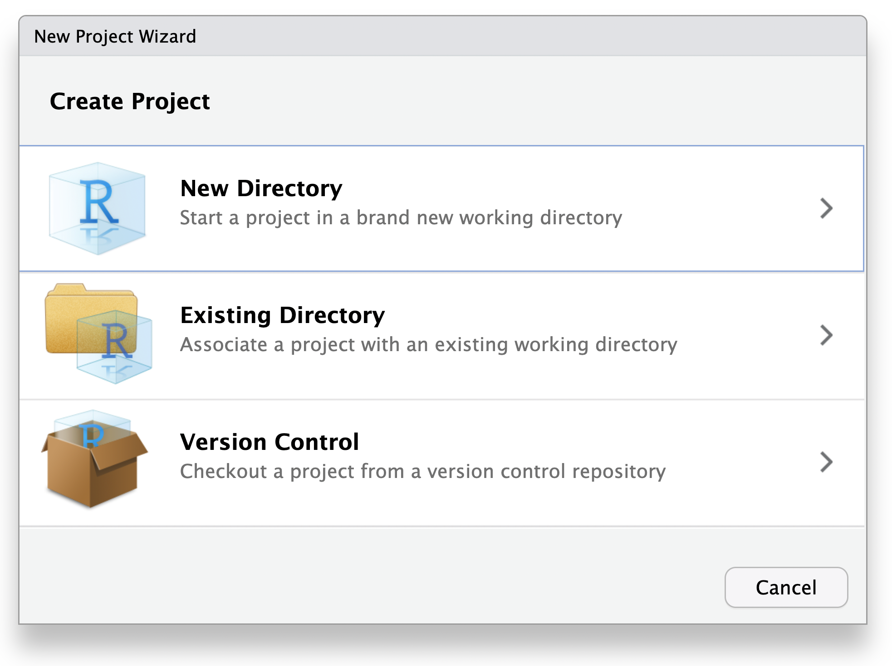

graph LR; a[1_cleaning.R] --> b[2_tables.R] & c[3_figures.R] & d[4_models.R]
Workshop: R Workflow
Vestin Hategekimana
Before we start
- Based on the future workshop for Take Over (UNIGE)
- Feel free to interrupt me or ask question (or leave)
- We will go on the group pace
- Slides are also tutorial for autonomous learning
- slides are available online
(1) Introduction
Why a workshop on workflow?
Because it is…
Not taught in statistical class
- Focus on statistical method
- The tool is secondary
Hard to find good examples
- Online and offline sources focus on the script
- Mostly for development
A matter of Statistical tool vs Programming language
Problem of not learning workflow:
- Spaghetti code
- Unreadable, slow, unstable, not reusable
- Non-reproducible work
- Works only on your computer under specific circumstances
- Hard collaboration
- “You want to share that?”
- Painful learning
- You need 5 times the energy required to do things and learn
Classical vs enhanced workflow
Q: What is a workflow? A: Organizing your work
- From the Research idea to the final output
- Final output:
- Report/Article (PDF, Word)
- Presentation (reveal.js, beamer, PowerPoint)
- Website (HTML)
- Book (HTML, PDF, Word, EPUB, AsciiDoc)
Classical workflow as presented by Posit (previously RStudio)

R for Data Science (Whickham & Garrett, 2017)
What is in the program in statistical classes:
- Research plan
- Data preparation
- Cleaning
- (Exploratory analysis)
- Descriptive analysis
- Inferential analysis (modelling)
- Presentation of results
What we really focus on in class:
- Research plan
- Data preparation
- Cleaning
- (Exploratory analysis)
- Descriptive analysis
- Inferential analysis (modelling)
- Presentation of results
What we are going to do today:
- Project set-up
- Cleaning
- Descriptive analysis
- Inferential analysis (modelling)
- Presentation of results
What we are going to focus on today:
- Project set-up
- Cleaning
- Descriptive analysis
- Inferential analysis (modelling)
- Presentation of results
(2) Your R environment
Where does R works?
Important
When you start a R session, R locate itself somewhere in your computer. The exact location is called Working directory (wd).
Where exactly?
- Working directory (wd): Where R works in the moment.
- To see where R work you can use the following code:
Default Working directory in RStudio
Important
Rstudio always start at the same place (contrary to other editors). To find the exact location go to:
Tools > Global Options > General (in the tab “Basic”)
This is the used location when RStudio doesn’t work with a project. See next picture for a visual representation.
The location is under “Default working directory (when not in a project)”
Take notes!
It is good practice to place all (or most) of your R code in a same folder.
In my case, I have a
Codefolder that contain every programming language I use (There is one for R). Inside each folder, there are at least Two folders:Test(s), where I test new things andProjectwhere I put all my serious projects in their dedicated folder. This is in theTest(s)folder that we will set our default working directory.
Exercices
- Create a folder dedicated to R and create the
TestandProjectfolders inside it. - Based on the three previous slides change the de default working directory to the
Testdirectory. - Displace all of your R code to R folder
- Group all the files that work together under a same project folder inside the
Projectfolder. - For all the R file you don’t know what to do with put them in the
Testfolder, it will be useful later!
- Group all the files that work together under a same project folder inside the
Advantages
- You always know where your files are: it must be in the R folder!!!
- You have now a distinction between your playground (
Testfolder) and your serious worksProject - You’ve just created your best learning resource for R
- Powerful with
ctrl/cmd + shift + fin RStudio
- Powerful with
ctrl/cmd + shift + f
This command allow you to search all the R code in a specific folder. Since all our R code is in the same place, we can search the “archive” of our previous work. It come really handy when we need to remember how to use a particular code. You can either search anything (function, comment, etc.).
When you search for a particular keyword, it will show you all the time you used it and will indicate you in wich folder and which line. You can also click on the result and RStudio will open the select file in the right line (really powerful).
See an example in the next slide
All the time I used the keyword “ggplot” in my code
Exercices: Try it! (3 min)
Setup RStudio to match your image
You will spend a good amout of time in RStudio, makes it all the more enjoyable!
Ressources:
The options
Follow the guide!!
Workspace
Remove the autoloading
Why?
Reproducibility!!!
- Force you to rerun your code in the right order
Long-term reproducibility is enhanced when you turn this feature off and clear R’s memory at every restart. Starting with a blank slate provides timely feedback that encourages the development of scripts that are complete and self-contained. Posit
Display
Code Display
Why?
It make the whole work smoother and colorful
At this point it is trully art
Themes

Rstudio themes
Why?
Why not? It is pretty and I like that!
Themes that might interest you
(3) Your project from A to Z
Setup the project (1)
RStudio project
RStudio projects (.Rproj) are file that tell R where to works. They also allow to set options and behaviour that R specific to the project.
renv
{renv} is a pacakge in are that allow to control the version of your package. What it does is to isolate yourt project from your whole R ecosystem and start as if you didn’t load any packages.
Setup the project (2)


Exercises (5 min)
- Create new projects and switch back and forth between them
- Create a new project, this time activate the
renv. In this project try to use a library (for instance {dplyr})
Why projects? (1)
Expert data scientists keep all the files associated with a given project together — input data, scripts, analytical results, and figures. This is such a wise and common practice that RStudio has built-in support for this via Projects. RStudio Projects make it straightforward to divide your work into multiple contexts, each with their own working directory, workspace, history, and source documents. Posit
Why projects? (2)
- Each project has its own environment
- Each project has its own options
- The working directory is fixed (ban
setwd()from your code!) - The work can be shared easily
- The project can be stored easily on GitHub
Why {renv}?
Sometime when package is updated, major changes are applied. Which mean that a code that worked fine until now could produce error or breaks. Since we can’t predict how packages will evolve, we can create an environment that is frozen in time. {renv} create this isolated context from other package so that package inside it have their own version. Which also mean that we have to reinstall all the packages.
Use {renv}
If the project wasn’t started with renv the first time
Update from time to time to keep track of the packages
Download a specific package version of a package
Setup working directory
One way to do that
Organisation
Data: Raw dataMyData: Cleaned dataReport: Report/presentation created with a notebookResult: Folder for tables and figuresScripts: Where the code is
Exercices (2 min)
- Populate your working directory with the folders needed
- Add the following dataset to the right folder:
- Word Value Survey (Please take Andorra 2018)
- Download the stata file
First script
Run code on RStudio and Tutorial RStudio Text Editor
Let’s get started!
Objectif for a clean code
(1) Files can be run entirely in one go (ctrl/cmd + alt + r)
- Code in the right order (no error)
- No command that are useless for the computer or change the state of the computer (ex.
setwd(),install.packages(),View())
(2) Files should be self-contained
- All the needed packages, functions and data should be loaded in the specific file
- The code is self-explanatory, well commented and structured
(3) Files should be named, organized and used with a specific purpose
- Order and purpose in the file’s name (ex. “1. Cleaning.R”)
Exercices (1 min)
Create the file “1_cleaning.R” in your “Script” folder equivalent and open it.
You could also name it “
01_the_data_cleaning_file.R”. The name you choose doesn’t matter as long as it is ordered and self-explanatory.
Tidyverse style guide: Files
Note that we don’t use spaces or special characters to follow the tidyverse style guide for files.
Variable names
Should follow a convention:
snake_case,CamelCase, etc.No spaces and no special character
Clear but not too long
Spacing
Between expression (readability)
Make line breaks as frequent as possible
Comments
Comment example
Good comments only explain the overall goal, not each specific line or step.
Sections
How I organize
Sometimes I replace “Analysis” by “Work”
The sections in application
Sections are useful because you can:
- Navigate through your code
- Fold your code (also possible for functions and statements)
- Structure your code (different levels)
First code
Step 1 - set the libraries needed
Packages should only be loaded once at the begining of the code
Step 1 - set the libraries needed
Option (1)
# Libraries ----
library(tidyverse)
library(rio) # Should be installed before
library(janitor) # Should be installed beforeMultiple cursors
Ctrl + Alt/Option + {Up/Down}
Ctrl + Alt/Option + Shift + {Direction}
Ctrl + Alt/Option + Shift + {Mouse}
Step 1 - set the libraries needed
Option (2)
It loads the package with
library()If it doesn’t find it, it installs it with
install.packages()It updates packages only if specified
Select the option that you like the most!
Importing data: the format/package issue
To much packages/functions
Bellow a few examples
# R
load("data.rda")
data <- readRDS("data.rds")
# csv
data <- read.csv("data.csv")
data <- readr::read_csv("data.csv")
# Excel
data <- xlsx::read.xlsx("data.xlsx")
data <- readxl::read_excel("data.xlsx")
# SPSS/Stata/SAS
data <- haven::read_spss("data.sav")
data <- haven::read_stata("data.dta")
# etc.
# Arrow
data <- arrow::open_dataset("data.parquet")
# etc.A wonderful package
With {rio} you only need two functions:
import() and export()
It works for all of the common data format: rdata, rda, rds, csv, tsv, sas7bdat, sav, dta, xlsx, parquet, feather, json and many more!
It reduce the number of packages/functions to memorize and load.
Step 2 - load the data
# Libraries ----
pacman::p_load(tidyverse, rio, janitor) # Should be installed before
# Data ----
andorra_raw <-
import("Data/WVS_Wave_7_Andorra_Stata_v5.0.dta",
setclass = "tbl_df") # {rio}RStudio propose you sometimes options based on what you already typed. Use the arrow keys or your mouse to choose one of the option and press either Enter or Tab to accept one.
For file path: If you are in a middle of a pair of double quote, press Tab and it will show you all the available folders and files in the working directory. You can navigate using the arrow key or your mouse, go inside folders using Tab and select using Enter.
Step 3 - Clean the data
# Libraries ----
pacman::p_load(tidyverse, rio, janitor) # Should be installed before
# Data ----
andorra_raw <-
import("Data/WVS_Wave_7_Andorra_Stata_v5.0.dta",
setclass = "tbl_df") # {rio}
andorra_raw %>%
clean_names() # {janitor} standardize column namesThe function clean_names() from {janitor} clean the dataframe name by:
- Removing special characters
- Lowering cases
- Replacing spaces by “
_” and “%” by “_percent_” and “#” by “_number_”
Step 3 - Clean the data
# Libraries ----
pacman::p_load(tidyverse, rio, janitor) # Should be installed before
# Data ----
andorra_raw <-
import("Data/WVS_Wave_7_Andorra_Stata_v5.0.dta",
setclass = "tbl_df") # {rio}
andorra_raw %>%
clean_names() %>% # {janitor} standardize column names
select(sex = q260, # Select and rename
age = q262, # Select and rename
emancipative = resemaval, # Select and rename
starts_with("h_"), # Select all variables that starts with "h_"
q1:q6) # Select from variable q1 to q6To go deeper check the following link: Tidy-Select
Step 3 - Clean the data
# Libraries ----
pacman::p_load(tidyverse, rio, janitor) # Should be installed before
# Data ----
andorra_raw <-
import("Data/WVS_Wave_7_Andorra_Stata_v5.0.dta",
setclass = "tbl_df") # {rio}
andorra_raw %>%
clean_names() %>% # {janitor} standardize column names
select(sex = q260, # Select and rename
age = q262, # Select and rename
emancipative = resemaval, # Select and rename
starts_with("h_"), # Select all variables that starts with "h_"
q1:q6) %>% # Select from variable q1 to q6
filter_all(all_vars(. >= 0)) %>% # Remove missing values
mutate(sex = factor(sex, labels = c("Male", "Female")), # Labels
h_settlement = factor(h_settlement, # Labels
labels = c("Capital city",
"Regional center",
"Another city",
"Village")),
h_urbrural = factor(h_urbrural, # Labels
labels = c("Urban",
"Rural"))) %>%
mutate_at(6:11, ~factor(.x,
labels = c("Very important",
"Rather important",
"Not very important",
"Not at all important")))
Step 3 - Clean the data
# Libraries ----
pacman::p_load(tidyverse, rio, janitor) # Should be installed before
# Data ----
andorra_raw <-
import("Data/WVS_Wave_7_Andorra_Stata_v5.0.dta",
setclass = "tbl_df") # {rio}
andorra_clean <- # Save the whole process here
andorra_raw %>%
clean_names() %>% # {janitor} standardize column names
select(sex = q260, # Select and rename
age = q262, # Select and rename
emancipative = resemaval, # Select and rename
starts_with("h_"), # Select all variables that starts with "h_"
q1:q6) %>% # Select from variable q1 to q6
filter_all(all_vars(. >= 0)) %>% # Remove missing values
mutate(sex = factor(sex, labels = c("Male", "Female")), # Labels
h_settlement = factor(h_settlement, # Labels
labels = c("Capital city",
"Regional center",
"Another city",
"Village")),
h_urbrural = factor(h_urbrural, # Labels
labels = c("Urban",
"Rural"))) %>%
mutate_at(6:11, ~factor(.x,
labels = c("Very important",
"Rather important",
"Not very important",
"Not at all important")))Save the data
# Libraries ----
pacman::p_load(tidyverse, rio, janitor) # Should be installed before
# Data ----
andorra_raw <-
import("Data/WVS_Wave_7_Andorra_Stata_v5.0.dta",
setclass = "tbl_df") # {rio}
andorra_clean <- # Save the whole process here
andorra_raw %>%
clean_names() %>% # {janitor} standardize column names
select(sex = q260, # Select and rename
age = q262, # Select and rename
emancipative = resemaval, # Select and rename
starts_with("h_"), # Select all variables that starts with "h_"
q1:q6) %>% # Select from variable q1 to q6
filter_all(all_vars(. >= 0)) %>% # Remove missing values
mutate(sex = factor(sex, labels = c("Male", "Female")), # Labels
h_settlement = factor(h_settlement, # Labels
labels = c("Capital city",
"Regional center",
"Another city",
"Village")),
h_urbrural = factor(h_urbrural, # Labels
labels = c("Urban",
"Rural"))) %>%
mutate_at(6:11, ~factor(.x,
labels = c("Very important",
"Rather important",
"Not very important",
"Not at all important")))
# Saving ----
export(andorra_clean, file = "MyData/andorra_clean.rds") # {rio}Alternative (shorter)
# Libraries ----
pacman::p_load(tidyverse, rio, janitor) # Should be installed before
# Data ----
andorra_raw <-
haven::read_dta("Data/WVS_Wave_7_Andorra_Stata_v5.0.dta") # {haven}
andorra_clean <- # Save the whole process here
andorra_raw %>%
clean_names() %>% # {janitor} standardize column names
select(sex = q260, # Select and rename
age = q262, # Select and rename
emancipative = resemaval, # Select and rename
starts_with("h_"), # Select all variables that starts with "h_"
q1:q6) %>% # Select from variable q1 to q6
filter_all(all_vars(. >= 0)) %>%
mutate_at(c(1,4:11), haven::as_factor) # Automatic factor
# Saving ----
export(andorra_clean, file = "MyData/andorra_clean.rds") # {rio}Easier with haven::as_factor() but we need to import the data with haven::read_dta() because of compatibility problem!
Exercises
- Run the whole file
1_cleaning.Rwith the commandctrl/cmd + alt + rto be sure that everything works fine. - Create the files
2_tables.R,3_figures.Rand4_models.Rand put them in the right folder. - For each file, setup the section to respect our clean code goal (run once, self-contained and organized).
- No need to load {janitor}
- We need to load {gtsummary} (tables)
- We need to load {sjPlot} (figures/tables/model)
Answers
Alway start by loading the packages and data. So that, next time we start the project, we don’t need to open the previous script to load the packages and the data since every scripts is self-contained.
Packages for creating tables
- {gtsummary}
- {arsenal}
- {sjPlot}
- {kableExtra}
- {flextable} … and many more!
Package for creating graphs
- {ggplot2}
- {sjPlot}
- {plotly}
- {eachart4r}
- {r2d3} … and many more!
Many references: R graph gallery and D3.js graph gallery
Packages for modelling
- {tidymodels}
- {easystats}
- {sjPlot} … and many more! Again!
Copy/paste each code to its file
# Libraries ----
pacman::p_load(tidyverse, rio, gtsummary)
# Data ----
andorra_clean <-
import("MyData/andorra_clean.rds") %>%
mutate_at(c(1,4:11), fct_drop)
# Work ----
# 1. Summary
# A simple summary table for all the variables
summary_table <-
andorra_clean %>%
tbl_summary()
# Save docx
summary_table %>%
as_gt() %>%
gt::gtsave(file = "Results/summary_table.docx")
# Save data
export(summary_table, file = "MyData/summary_table.rds")
# 2. Emancipative: urban vs rural
# Test the difference in emancipative and variables related
# to the importance of value in life by urbanicity of region
# of residence.
emancipative_table <-
andorra_clean %>%
select(h_urbrural,
emancipative,
starts_with("q")) %>%
tbl_summary(by = h_urbrural) %>%
add_p()
# Save docx
emancipative_table %>%
as_gt() %>%
gt::gtsave(file = "Results/emancipative_table.docx")
# Save data
export(emancipative_table, file = "MyData/emancipative_table.rds")# Libraries ----
pacman::p_load(tidyverse, rio, gtsummary)
# Options ----
theme_set(theme_bw())
theme_update(legend.position = "top")
# Data ----
andorra_clean <- import("MyData/andorra_clean.rds")
# Visualization ----
# 1. Emancipative distribution
# Simple dansity plot for the emancipative part
emancipative_distribution<-
andorra_clean %>%
ggplot(aes(emancipative)) +
geom_density(fill = "cyan", alpha = 0.5) +
labs(title = "Emancipative index distribution")
# Save png
emancipative_distribution %>%
ggsave(plot = .,
filename = "Results/emancipative_distribution.png")
# Save ggplot
emancipative_distribution %>%
export(file = "MyData/emancipative_distribution.rds")
# 2. Emancipaitve/sex/urbrural
# Emancipative destribtuion by sex and urbanicity
# region of residence
emancipative_sex_urban <-
andorra_clean %>%
ggplot(aes(emancipative, fill = h_urbrural)) +
geom_density(alpha = 0.5) +
facet_wrap(~sex) +
labs(title = "Emancipative index distribution",
subtitle = "by sex and urbanicity of region of residence",
fill = "Urbanicity")
# Save png
emancipative_sex_urban %>%
ggsave(plot = .,
scale = 1.5,
filename = "Results/emancipative_sex_urban.png")
# Save ggplot
emancipative_sex_urban %>%
export(file = "MyData/emancipative_sex_urban.rds")# Libraries ----
pacman::p_load(tidyverse, rio, sjPlot)
# Data ----
andorra_clean <-
import("MyData/andorra_clean.rds") %>%
mutate_at(c(1,4:11), fct_drop)
# Analysis ----
## Model ----
# A linear model testing the relationship between the emancipative
# index and predictors (sex, age, urbanicity of region of residence)
model <- lm(emancipative ~ sex + age + h_urbrural,
data = andorra_clean)
# Save data (model)
export(model, file = "MyData/model.rds")
# Regression table
# The model regression table (save automaticaly)
tab_model(model,
collapse.ci = TRUE,
p.style = "stars",
file = "Results/regression_table.doc")
# Save data (regression table)
regression_table <-
tab_model(model,
collapse.ci = TRUE,
p.style = "stars")
export(regression_table, file = "MyData/regression_table.rds")Background Jobs

It is running alone!
Now that every file is self-contained, we can run them as background jobs to save time.
Advantages of background jobs
- We can keep working with the console while it is running
- We are saving time when the work is long
- We plan multiple jobs
But we still have a dependency tree problem!
Dependency tree
- If
1_cleaning.Rchanges, we need to rerun all the files
The best tool that automaticaly handle which file to run is {target}, but it is pretty advanced.
Workflow in nutshell
- Create a project
- Populate it with the right folders and the data
- No space and special character (files/folder)
- Put script in order
- For each file
- Self-contained: load packages, data
- Clean code: Name, space, comments, sections, order, etc.
- Save output: data format and/or other (pictures, files, etc.)
Optimization
There are other tools to make your work better/efficient
{todor}: TODO, FIXME, etc. to keep track of your work
Help me help you with {reprex}
SPEED (data): {collapse}, {data.table}, {dtplyr}, {dbplyr}, {arrow}, {polar}, {tidypolar}
SPEED (computing): {future}, {furrr}, {Rcpp}, {JuliaCall}
Resources to deepen your knowledge in R
Getting help with R: How do I know how it works?
Bookdown: free books online
- R for Data science: Startin using R for data analysis
{tidyverse}: The new coding standard in R
Awesome R: List of awesome packages/works/etc. in R
Metacran: All the available packages
(4) Show your results with Quarto
What is Quarto?
One of the best tool for scientific publishing! Keep your code, result and writting together!
Why you should use Quarto?
As a (data) scientist/researcher, you should save time when you need to publish. Quarto allows you to put your code, its output and your writting in a single file that can be exported in many format.
Language agnostic (R, Python, Julia and JavaScript)
Highly portable (Rstudio, VS Code, Jupyter, Neovim, etc.)
Versatile formats (articles, presentation, website, books, etc.)
Good defaults and highly customizable (template for journals)
Quarto vs RMarkdown
Better interface in general (visual mode improved)
Better format handling!
Code completion in YAML and markdown
Easier to learn (everything builtin and feature cross format)
Rmarkdown are easily convertible (also your knowledge)
Quarto will continue to grow, Rmarkdown won’t
As a RMarkdown user, it is easy to start Quarto (they are mostly the same!)
Your first notebook
Now let’s add the results of our analysis to a notebook!
graph LR; a[1_cleaning.R] --> b[2_tables.R] & c[3_figures.R] & d[4_models.R] b & c & d --> e[report.qmd] e --> f[articles] & g[presentation] & h[website] & i[book]
Follow the guide!
(5) Questions & freestyle
You can:
Discuss/ask questions
Try the whole workflow with your own projects
Leave
I can:
Show you the magic wand
Go in depth we some ressources